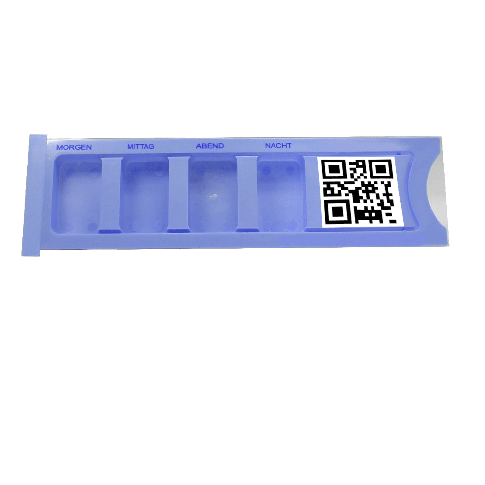
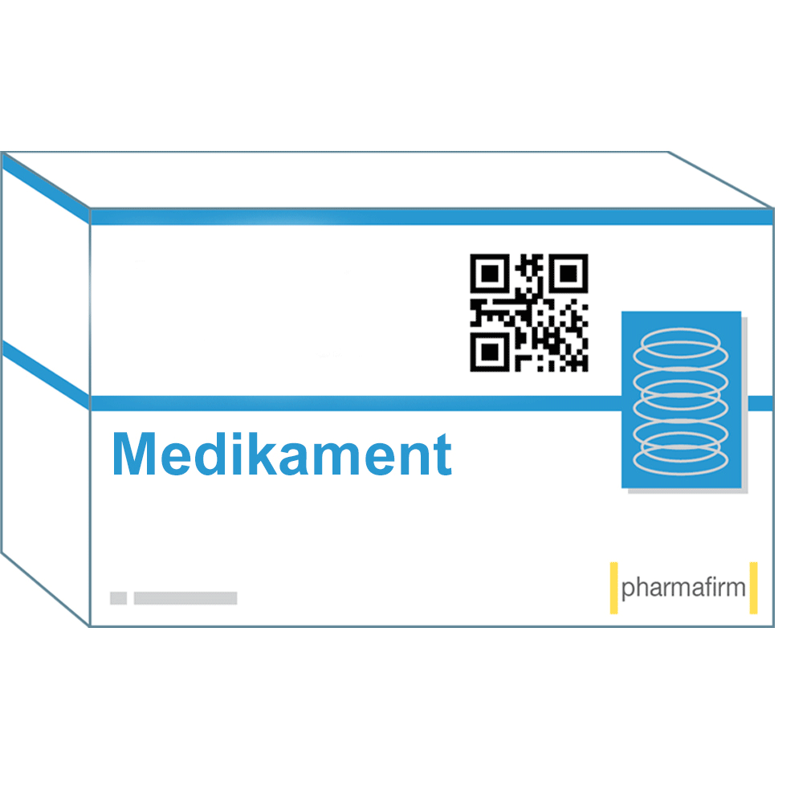

|
Dispenserbestückung 1. Dispenser scannen Wählen Sie im Hauptmenü die Funktion "Dispenserbestückung" aus. Scannen Sie nun den QR-Code, der auf dem Dispenser angebracht wurde, mit der Hauptkamera des Smartphones. Daraufhin wird eine Übersicht mit der Tagesmedikation des jeweiligen Patienten angezeigt. Mit Hilfe des "Weiter"-Buttons können Sie anschließend die angezeigten Medikamente scannen. Die Reihenfolge, in der Sie die Medikamente scannen, ist dabei egal. Nehmen Sie sich eines der Medikamente zur Hand und drücken Sie "Weiter".  |
|
2. Medikamente scannen Das Bild zeigt, wie Sie den Code des Medikaments scannen. Wenn der Scan erfolgreich ist, legen Sie die angezeigte Dosis des Medikaments in das richtige Tageszeiten-Fach des Dispensers. Durch Bestätigen des "Ok"-Buttons gelangen Sie wieder in die Listenansicht der Tagesmedikation. Dort sehen Sie, welche Medikamente bereits von Ihnen gescannt wurden. Sobald Sie einen Dispenser vollständig bestückt haben, erhalten Sie eine Benachrichtigung. Sie können nun entweder mit dem nächsten Dispenser anfangen oder die Dispenserbestückung beenden.  |